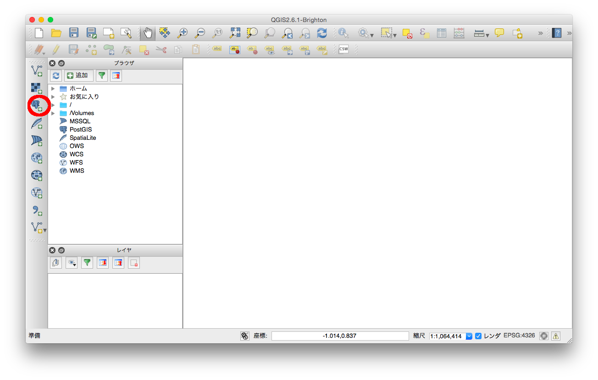
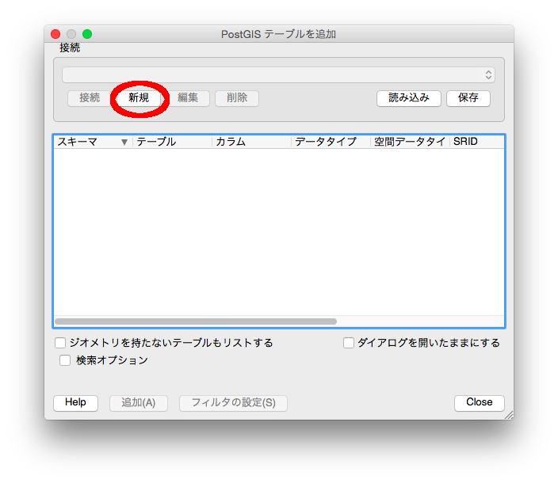
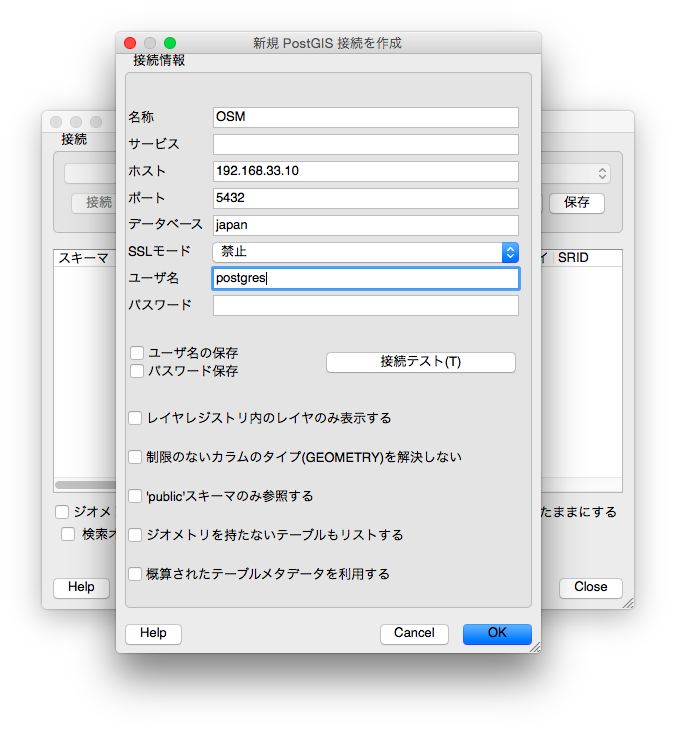
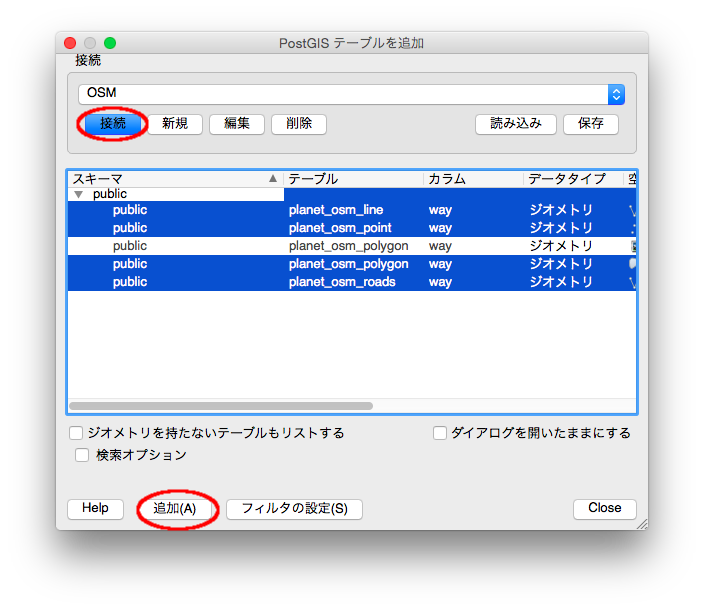
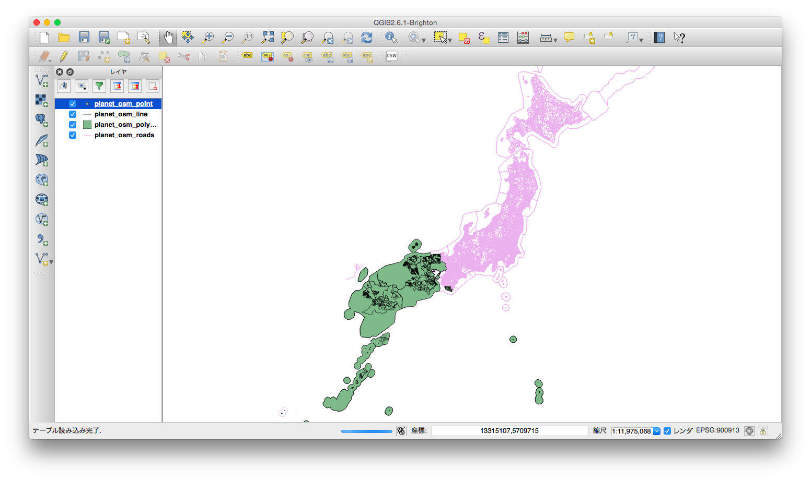
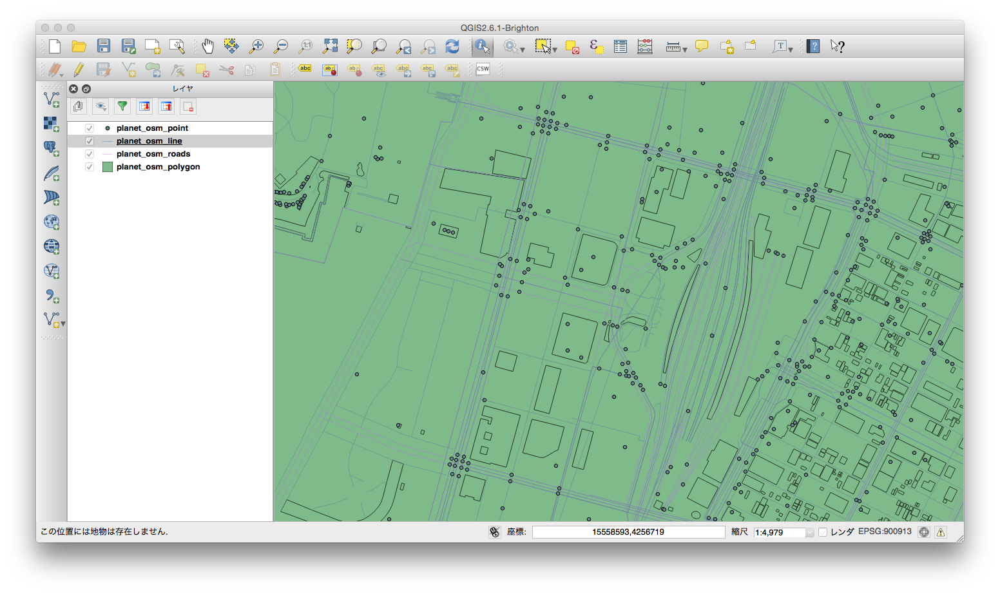
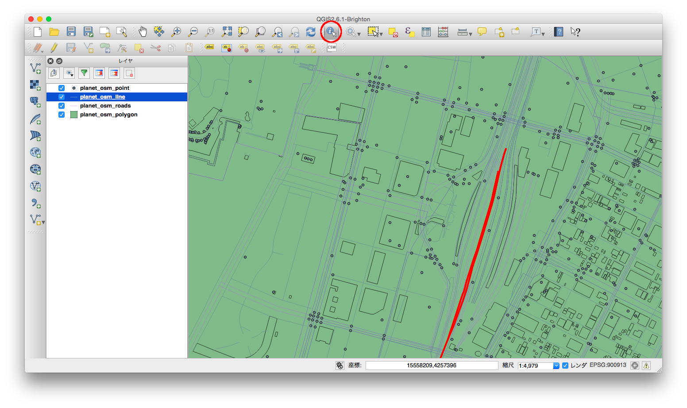
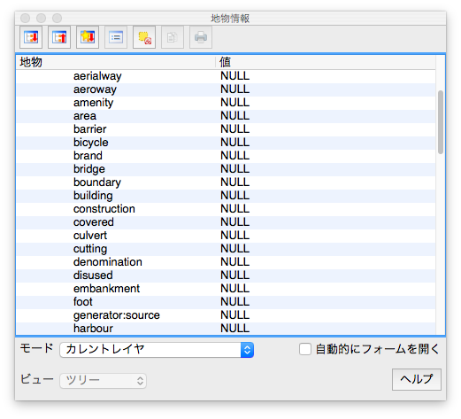

前回、OSMのデータをDBに入れて、selectしたりしたわけですが、
やっぱり視覚的に「ちゃんと日本のデータが入った！」っていうのを確認したいですね。
ということで、今回はQGISでデータの中身を確認してみます。
QGISはGISのツールの中でもメジャーな方なので、比較的情報もたくさんあります。
かなり奥深いツールですが、今回はデータを見てみるだけにしておきます。
QGISのインストールはこちらのページからインストーラを落として実行するだけです。
QGISにデータを読み込む
QGISを起動して、左側にあるゾウのマークをクリックします

「PostGIS テーブルを追加」という画面が出てくるので、新規をクリック

こんな感じで接続情報を書きます。
ホストはこの記事でつくった仮想環境です。
接続テストがでてきたら、OKをクリック

「接続」ボタンを押すとテーブルの一覧がでてきます。
osmのデータが入っている４つのテーブルを選んで「追加」をクリック

そうすると、レイヤーに選択したテーブルがでてきて、徐々に日本地図が現れます
（けっこう時間かかります）

地物を確認してみる
地図にのってる建物や道のことを地物といいます。
この地物をQGISで確認してみましょう。
＋ボタンを使って、東京駅のあるところまでズームします

iボタン（地物情報表示）で地物をひとつ選んでみます

そうすると、こんな画面がでてきて、DBの値がわかります

こうやって視覚的に見れると、ちゃんと日本地図のデータが入ったんだなって実感しますね
今日はここまで！